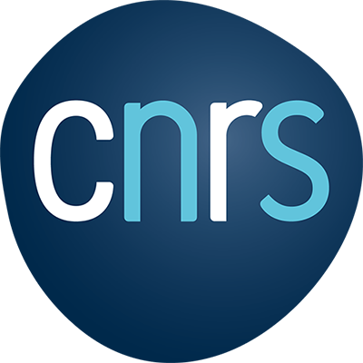
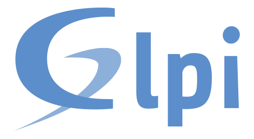
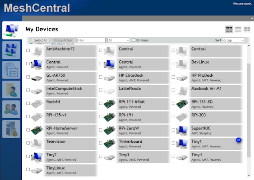
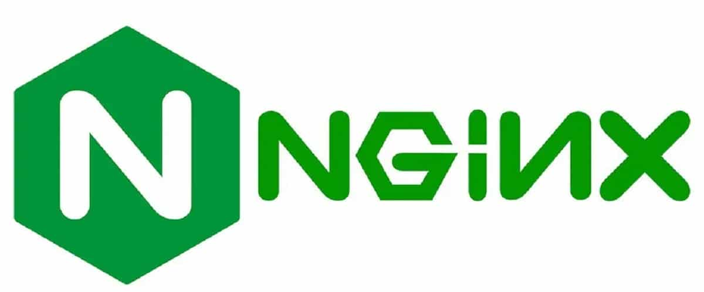
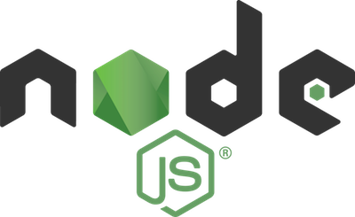
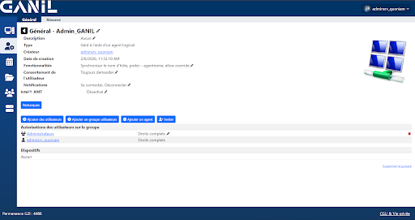
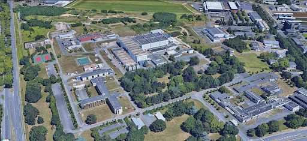

+800 postes clients
Windows bureautique, stations Linux scientifiques, contrôle-commande, stations DAO/CAO.

Soutenance de stage 2026
Rapport de stage - Administrateur systèmes et réseaux
Lieu
GANIL (Grand Accélérateur National d'Ions Lourds), Caen
Auteur
Romain QUONIAM
Encadrement
Tuteur : Guillaume LALAIRE
Professeur référent : Hervé GUIMBRETIERE
Période
5 janvier – 20 février 2026



Diapositive 1
Diapositive 2
Centre
Schéma horizontal orienté lisibilité : 4 divisions connectées à la direction pour refléter une coordination transversale plutôt qu'une hiérarchie opaque.
Diapositive 3
Le G2I (Groupe Infrastructure Informatique) est le garant du transport de l'information et un support privilégié/expert pour l'ensemble des métiers GANIL.
Diapositive 4
Machines récentes et anciennes coexistent : le réseau GANIL s'apparente à une ville connectée.
Windows bureautique, stations Linux scientifiques, contrôle-commande, stations DAO/CAO.
Applications métiers, calcul scientifique, stockage massif > 1 Po, services DHCP/DNS/AD.
150 switchs et 80 bornes Wi-Fi, y compris en environnements industriels contraints.
200 postes, QoS indispensable pour préserver la qualité voix sur le réseau RJ45.
Automates, capteurs, imprimantes, caméras, contrôle d'accès : bien au-delà d'un parc bureautique classique.
Diapositive 5
VNC (actuel)
MeshCentral (cible)

Slide Intermédiaire

Reverse proxy, terminaison TLS/HTTPS, protection frontale.

Traitement asynchrone des WebSockets pour la télémaintenance temps réel.
Stockage orienté documents JSON, flexible pour logs et inventaire.
Choix justifié : disponibilité élevée, flexibilité du format JSON et adaptation aux contraintes de flux en temps réel.
Diapositive 6

Diapositive 7

Diapositive 8
Prise en charge des incidents impression, réseau et logiciels.
Remise à neuf d'un portable avec installation d'un Ubuntu vierge.
Intégration progressive à l'équipe, meilleure compréhension des usages terrain.
Cette polyvalence a guidé une configuration MeshCentral orientée simplicité d'usage pour les utilisateurs finaux.
Diapositive 9
Diapositive 10
Maquette : Fait
Audit sécurité : À revoir
Production : À faire

Diapositive 11
Merci à l'équipe G2I, à Guillaume LALAIRE, à l'ensemble du service pour l'accueil, et au GANIL pour l'opportunité.
Session de Questions / Réponses